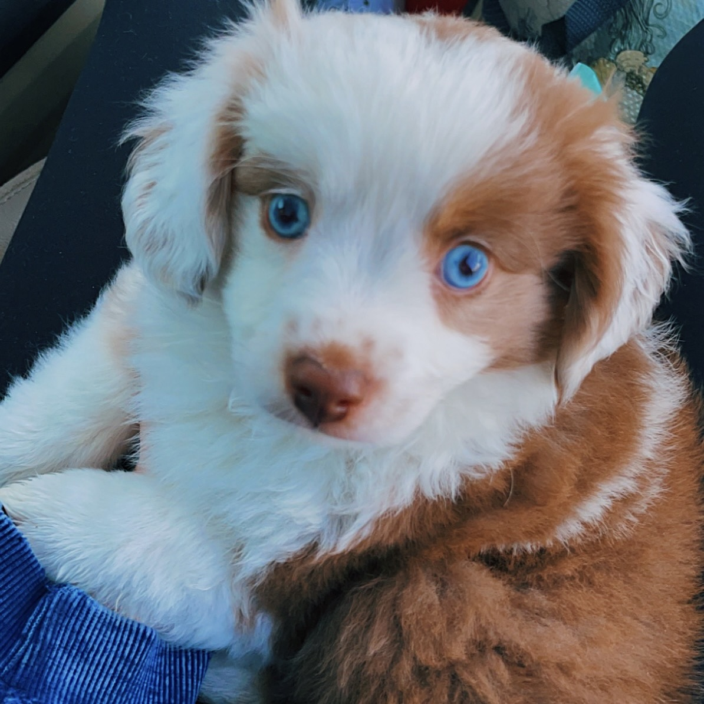

Kirby
Kirby is my mini australian shepherd. He has white and brown fur and beautiful blue eyes. When I first got him, he was only 5 pounds. He is a rather lazy dog - he loves taking naps and sitting in the sun.